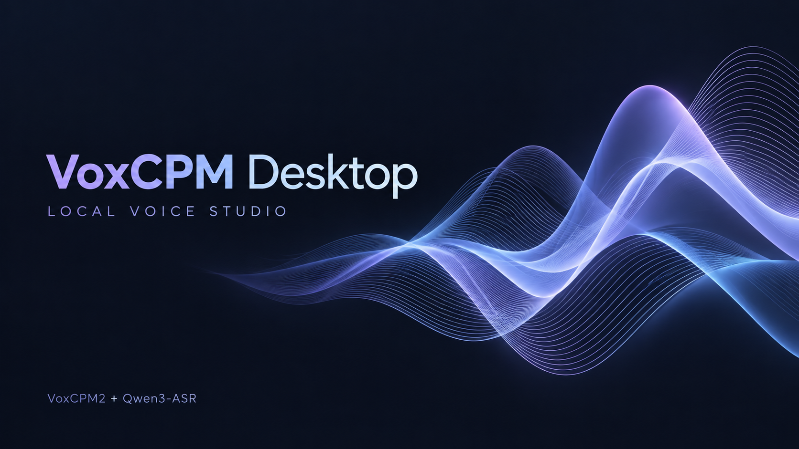

01
你想让它说什么？
支持中文、日语、英语等语言0 / 500
模仿参考音色时，可以先留空语气描述。
02
选择参考声音
可选长音频自动截取最多 30 秒，原文件保持不变。
YOUR CREATION
生成结果
先完成设备检测，即可开始。
模仿参考音色时，可以先留空语气描述。
长音频自动截取最多 30 秒，原文件保持不变。

安装前检查系统、内存、显卡和可用空间，并实际验证推理运行环境。
可直接使用，也可安装到个人应用程序目录；Windows 安装会添加桌面快捷方式。
识别与生成依次执行，处理结束后释放模型内存。参考音频不会用于永久训练。